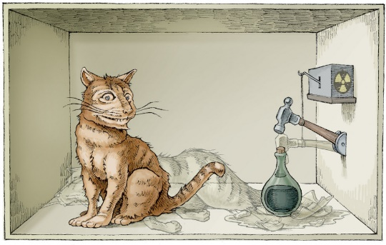

Naar de toekomst toe is het onmogelijk dat men de afstand tussen de verschillende componenten op de chip kan blijven verkleinen.
Conventionele computers werken in het binair talstelsel. Ze gaan ervan uit dat op een bepaald tijdstip een bit in het werkgeheugen met 100% zekerheid ofwel de toestand 1 ofwel de toestand 0 heeft aangenomen. Een bit wordt in het werkgeheugen bijgehouden door een condensator en een transistor.
Bij een computer gebouwd volgens de quantumprincipes kunnen er verschillende toestanden op hetzelfde moment plaatsvinden. In plaats van een bit spreken we dan over een qubit.
Een qubit kan ofwel de waarde 0, ofwel de waarde 1 maar ook zowel de waarde 0 als 1 hebben op hetzelfde moment. De status van een qubit wordt veelal bijgehouden door de polarisatie van een photon of de spin van een elektron. Het feit dat meerdere waarden op hetzelfde moment kunnen voorkomen wordt ook wel ‘quantumsuperpositie’ genoemd.
Maar hoe kan iets nu twee waarden aannemen op hetzelfde moment? Misschien valt dit het best te verklaren aan de hand van Schrödingers kat paradox. Schrödinger was een wetenschapper uit Oostenrijk, geboren in 1887. In 1935 publiceerde hij zijn paradox, die zoals je kan lezen, niet bepaald diervriendelijk was…
Een kat wordt in een stalen ruimte opgesloten, samen met de volgende helse machine (die men afschermen moet tegen direct ingrijpen van de kat): in een buisje zit een minuscuul klein beetje van een radioactief element, zo weinig, dat gedurende een uur mogelijk een van de atomen vervalt, maar even waarschijnlijk ook niet. Vervalt een atoom, dan detecteert een geigerteller dat en laat via een relais een hamertje vallen, dat een flesje met blauwzuur stuk slaat.

Als men dit systeem een uur lang aan zichzelf heeft overgelaten, dan zal men zeggen dat de kat nog leeft als intussen geen atoom vervallen is. Het eerste atoom dat vervalt zou de kat vergiftigd hebben. De toestandsfunctie van het hele systeem zou dat zo uitdrukken, dat daarin de levende en de dode kat gelijktijdig gemengd voorkomen.
Het is pas wanneer je effectief de stalen ruimte opent dat je zal zien als de kat nog leeft of niet. Maar voor je de stalen ruimte had geopend deden er zich twee toestanden voor.
In de quantummechanica kan superpositie enkel bestaan zolang je de toestand niet waarneemt. Een toestand wordt niet uitgedrukt in 1 of 0 maar wel in de kans dat de toestand 1 of 0 is.
Hopelijk begrijp je nu dat bij een klassieke computer die zogenaamde superpositie niet bestaat. Een bit is ofwel 1 of 0. Bij quantumcomputers kan een qubit zowel 1 of 0 zijn zolang je de status niet controleert. Controleer je de status wel, dan neemt deze ofwel de waarde 1 aan, ofwel de waarde 0.
De voordelen van quantumcomputers zijn niet te onderschatten. Ze werken veel sneller en kunnen door superpositie bepaalde zaken parallel uitvoeren.
Beeld je in dat je met een gewone computer een programma maakt dat een pincode moet raden. Alle mogelijke combinaties worden 1 voor 1 afgegaan en dit neemt heel wat tijd in beslag. Met een quantumcomputer bestaan al die combinaties tegelijkertijd in het geheugen en kunnen ze tegelijkertijd getest worden. Dit vormt een enorme bedreiging voor de systemen en organisaties die gebruik maken van encryptie. Iets versleutelen met een wachtwoord kan ongedaan gemaakt worden in recordtijd...